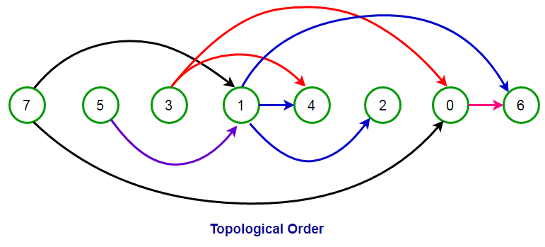
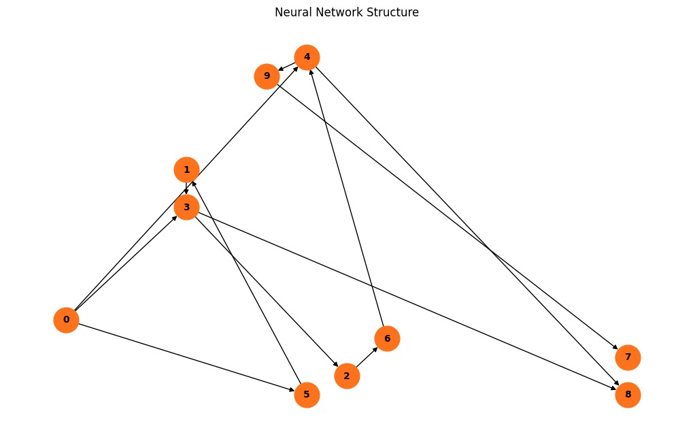
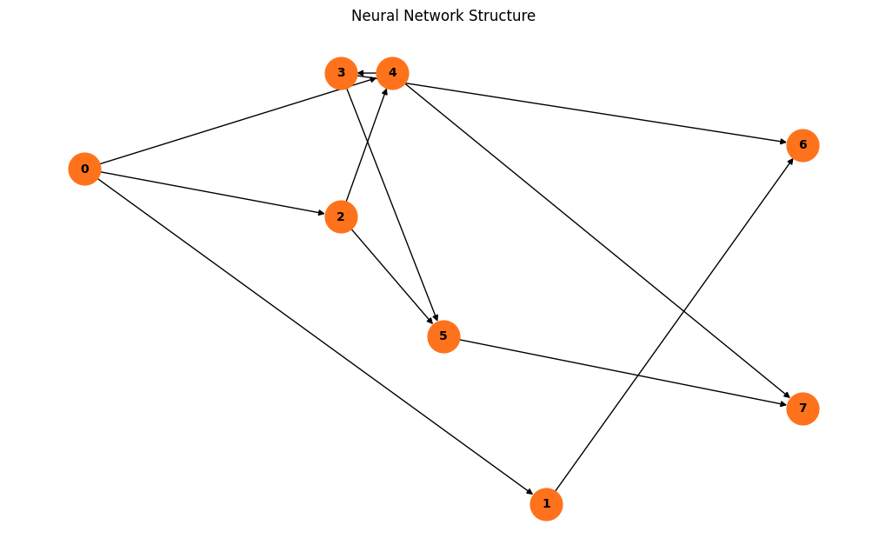

Theorical Explanation#
Important Aspects of the Project#
DAG (Directed Acyclic Graph):#
Khans Topological order
Neural Networks#
Backward propagation
Forward propagation
Genetic Algorithm#
Genotype
Fenotype
Mutation
Selection
'''
class Gen_neuron:
def __init__(self, neuron_id: int, neuron_type: str, bias: float) -> None:
self.neuron_id = neuron_id
self.neuron_type = neuron_type
self.output_value = 0.0
self.bias = bias
def __repr__(self):
return (f"Gen_neuron("
f"id={self.neuron_id}, "
f"type='{self.neuron_type}', "
f"bias={self.bias}, "
f"output_value={self.output_value})")
class Neuron:
def __init__(self, gen_neuron: Gen_neuron) -> None:
self.neuron_id = gen_neuron.neuron_id
self.neuron_type = gen_neuron.neuron_type
self.output_value = gen_neuron.output_value
self.bias = gen_neuron.bias
self.activation_function = np.tanh
self.activation_derivative = activation_derivative
self.delta = 0.0
def __repr__(self):
return (f"Neuron("
f"id={self.neuron_id}, "
f"type='{self.neuron_type}', "
f"bias={self.bias}, "
f"output_value={self.output_value}, "
f"delta={self.delta})")
class Gen_connection:
def __init__(self, from_neuron_id: int, to_neuron_id: int, weight: float, enabled: bool = True) -> None:
self.from_neuron_id = from_neuron_id
self.to_neuron_id = to_neuron_id
self.weight = weight
self.enabled = enabled
def __repr__(self):
return (f"Gen_connection("
f"from_neuron_id={self.from_neuron_id}, "
f"to_neuron_id={self.to_neuron_id}, "
f"weight={self.weight}, "
f"enabled={self.enabled})")
class Connection:
def __init__(self, gen_connection: Gen_connection) -> None:
self.from_neuron_id = gen_connection.from_neuron_id
self.to_neuron_id = gen_connection.to_neuron_id
self.weight = gen_connection.weight
self.enabled = gen_connection.enabled
def __repr__(self):
return (f"Connection("
f"from_neuron_id={self.from_neuron_id}, "
f"to_neuron_id={self.to_neuron_id}, "
f"weight={self.weight}, "
f"enabled={self.enabled})")
class Genotype:
def __init__(self) -> None:
self.neurons = []
self.connections = []
self.layers = []
def add_neuron(self, neuron: Gen_neuron):
self.neurons.append(neuron)
def add_connection(self, connection: Gen_connection):
self.connections.append(connection)
def stablish_layers(self, layers_array):
self.layers = layers_array
def delete_connection(self):
self.connections = self.connections[:-1]
def mutate(self):
def dfs_path_exists_genotype(genotype: Genotype, start_id: int, end_id: int) -> bool:
visited: Set[int] = set()
path_found = False # Verifica si al menos un camino llega al nodo de destino
def dfs(current_id: int) -> None:
nonlocal path_found
# Si llegamos al nodo objetivo, registramos el camino encontrado
if current_id == end_id:
path_found = True
return
# Marcamos la neurona actual como visitada
visited.add(current_id)
# Iterar sobre las conexiones salientes de la neurona actual
for connection in genotype.connections:
if connection.enabled and connection.from_neuron_id == current_id and connection.to_neuron_id not in visited:
# Realizar la llamada recursiva para explorar el siguiente nodo
dfs(connection.to_neuron_id)
# Removemos el nodo actual de visitados para permitir otros caminos
visited.remove(current_id)
# Llamar al DFS desde el nodo inicial
dfs(start_id)
return path_found
def attempt_mutation(mutation_function):
for _ in range(5):
# Crear una copia del genotipo actual para probar la mutación
test_genotype = copy.deepcopy(self)
mutation_function(test_genotype)
# Lista para registrar si existe un camino desde cada entrada a cada salida
path_exists = []
# Iterar sobre cada neurona de entrada y salida
for input_neuron in test_genotype.layers[0]: # Neuronas de entrada
for output_neuron in test_genotype.layers[-1]: # Neuronas de salida
start_neuron_id = input_neuron.neuron_id
end_neuron_id = output_neuron.neuron_id
# Realizar la búsqueda DFS para verificar si existe un camino desde la entrada a la salida
exists = dfs_path_exists_genotype(test_genotype, start_neuron_id, end_neuron_id)
print(f'DFS ({start_neuron_id} -> {end_neuron_id}): {exists}')
path_exists.append(exists)
if kahn_topological_order(Network(test_genotype)) is not None and all(path_exists):
print('Mutación válida, se realizó un cambio')
print('Caminos validados:', path_exists)
print('Función de mutación aplicada:', str(mutation_function))
mutation_function(self)
return
elif kahn_topological_order(Network(test_genotype)) is None:
print('Grafo cíclico detectado, mutación rechazada')
elif not all(path_exists):
print('No todos los caminos existen después de la mutación:', path_exists)
def add_random_connection(test_genotype):
"""Agrega una conexión aleatoria entre dos neuronas no conectadas."""
possible_connections = []
for n1 in test_genotype.neurons:
for n2 in test_genotype.neurons:
if n1.neuron_id != n2.neuron_id:
connection_exists = any(
conn.from_neuron_id == n1.neuron_id and conn.to_neuron_id == n2.neuron_id
for conn in test_genotype.connections
)
inverse_connection_exists = any(
conn.from_neuron_id == n2.neuron_id and conn.to_neuron_id == n1.neuron_id
for conn in test_genotype.connections
)
if not connection_exists and not inverse_connection_exists and n1.neuron_type != 'output' and n2.neuron_type != 'input':
possible_connections.append((n1.neuron_id, n2.neuron_id))
if possible_connections:
from_id, to_id = random.choice(possible_connections)
new_weight = random.uniform(-1.0, 1.0)
new_connection = Gen_connection(from_id, to_id, new_weight)
test_genotype.add_connection(new_connection)
def delete_random_connection(test_genotype):
"""Elimina una conexión aleatoria del genotipo."""
if test_genotype.connections:
connection_to_delete = random.choice(test_genotype.connections)
test_genotype.connections.remove(connection_to_delete)
def modify_random_weight(test_genotype):
"""Modifica aleatoriamente el peso de una conexión."""
if test_genotype.connections:
connection = random.choice(test_genotype.connections)
connection.weight += random.uniform(-0.5, 0.5)
def add_random_neuron(test_genotype):
"""Agrega una nueva neurona entre dos conexiones existentes."""
if test_genotype.connections:
connection = random.choice(test_genotype.connections)
if connection.enabled:
# Crear nueva neurona
new_neuron_id = len(test_genotype.neurons)
new_bias = random.uniform(-0.5, 0.5)
new_neuron = Gen_neuron(new_neuron_id, "hidden", new_bias)
test_genotype.add_neuron(new_neuron)
connection.enabled = False # Temporarily disable the connection
test_genotype.add_connection(Gen_connection(connection.from_neuron_id, new_neuron_id, random.uniform(-1.0, 1.0)))
test_genotype.add_connection(Gen_connection(new_neuron_id, connection.to_neuron_id, random.uniform(-1.0, 1.0)))
# Update the layers to include the new neuron in the appropriate position
for layer in test_genotype.layers:
if connection.from_neuron_id in [neuron.neuron_id for neuron in layer]:
layer.append(new_neuron)
break
def modify_random_bias(test_genotype):
"""Modifica el sesgo de una neurona aleatoria."""
if test_genotype.neurons:
neuron = random.choice(test_genotype.neurons)
neuron.bias += random.uniform(-0.1, 0.1)
mutation_functions = [
add_random_connection,
delete_random_connection,
modify_random_weight,
add_random_neuron,
modify_random_bias,
]
mutation_function = random.choice(mutation_functions)
attempt_mutation(mutation_function)
class Network:
def __init__(self, genotype: Genotype) -> None:
self.neurons = [Neuron(neuron) for neuron in genotype.neurons]
self.connections = [Connection(connection) for connection in genotype.connections]
self.layers = [[self.neurons[genotype.neurons.index(neuron)] for neuron in layer] for layer in genotype.layers]
def __repr__(self):
neurons_repr = ", ".join(repr(neuron) for neuron in self.neurons)
connections_repr = ", ".join(repr(connection) for connection in self.connections)
layers_repr = ", ".join(f"[{', '.join(repr(neuron) for neuron in layer)}]" for layer in self.layers)
return (f"Network(\n"
f" Neurons=[{neurons_repr}],\n"
f" Connections=[{connections_repr}],\n"
f" Layers=[{layers_repr}]\n"
f")")
def forward_propagator(self, input_values: List[Any]):
order = kahn_topological_order(self)
for index, (neuron, input_value) in enumerate(zip(self.layers[0], input_values)):
if neuron.neuron_type == 'input':
neuron.output_value = input_value
self.neurons[index] = neuron
for neuron_id in order:
neuron = self.neurons[neuron_id]
if neuron.neuron_type != 'input':
weighted_inputs = []
for connection in self.connections:
if connection.to_neuron_id == neuron.neuron_id and connection.enabled:
from_neuron = self.neurons[connection.from_neuron_id]
weighted_inputs.append(from_neuron.output_value * connection.weight)
neuron.output_value = neuron.activation_function(sum(weighted_inputs) - neuron.bias)
self.neurons[neuron_id] = neuron
return [neuron.output_value for neuron in self.layers[-1]]
def backward_propagator(self, target_values: List[float], learning_rate: float = 0.01):
errors = []
order = kahn_topological_order(self)
reversed_order = order[::-1]
for i, output_neuron in enumerate(self.layers[-1]):
output_error = target_values[i] - output_neuron.output_value
errors.append(output_error)
output_neuron.delta = output_error * output_neuron.activation_derivative(output_neuron.output_value)
for neuron_id in reversed_order:
neuron = self.neurons[neuron_id]
if neuron.neuron_type != 'output':
error_sum = 0.0
for connection in self.connections:
if connection.from_neuron_id == neuron.neuron_id and connection.enabled:
to_neuron = self.neurons[connection.to_neuron_id]
error_sum += to_neuron.delta * connection.weight
neuron.delta = error_sum * neuron.activation_derivative(neuron.output_value)
for connection in self.connections:
if connection.enabled:
from_neuron = self.neurons[connection.from_neuron_id]
to_neuron = self.neurons[connection.to_neuron_id]
connection.weight += learning_rate * to_neuron.delta * from_neuron.output_value
from_neuron.bias += learning_rate * to_neuron.delta
def kahn_topological_order(network: Network):
neurons = network.neurons
if network.connections:
connections = network.connections
in_degree = {neuron.neuron_id: 0 for neuron in neurons}
adj_list = {neuron.neuron_id: [] for neuron in neurons}
for connection in connections:
if connection.enabled:
adj_list[connection.from_neuron_id].append(connection.to_neuron_id)
in_degree[connection.to_neuron_id] += 1
queue = deque([neuron_id for neuron_id in in_degree if in_degree[neuron_id] == 0])
topological_order = []
while queue:
current = queue.popleft()
topological_order.append(current)
for neighbor in adj_list[current]:
in_degree[neighbor] -= 1
if in_degree[neighbor] == 0:
queue.append(neighbor)
if len(topological_order) != len(neurons):
return None
return topological_order
else:
return []
class Population():
def __init__(self, population_id, number_gens):
self.population_id = population_id
self.number_gens = number_gens
self.populationGenes = None
self.populationNets = None
def initialize_population(self):
populationGenes = []
populationNets = []
for _ in range(self.number_gens):
Num_neurons_input = 1
Num_neurons_hidden = np.random.randint(3,7)
Num_neurons_output = 2
Gen = Genotype()
G = nx.DiGraph()
Node_generator(Gen, Num_neurons_hidden, Num_neurons_input, Num_neurons_output, [])
player_X_caller(Gen)
Net = Network(Gen)
populationGenes.append(Gen)
populationNets.append(Net)
self.populationGenes = populationGenes
self.populationNets = populationNets
return populationGenes, populationNets
def __to_data_test_train(self, index_population, df, populationNets, orders_list):
new_rows = []
for net in populationNets:
num_hidden = len(net.layers[1])
num_connections = len(net.connections)
average_weight = np.mean([conn.weight for conn in net.connections])
average_bias = np.mean([neuron.bias for neuron in net.neurons])
new_row = [num_hidden, num_connections, average_weight, average_bias, 0, 0]
new_rows.append(new_row)
new_df_rows = pd.DataFrame(new_rows, columns=["num_hidden", "num_connections", "average_weight", "average_bias", "order", "target"])
new_df = pd.concat([df, new_df_rows], axis=0, ignore_index=True)
new_df['order'] = orders_list
new_df.to_excel(f'network_dataframes/{index_population}_NetworkData.xlsx',index=False)
return new_df
def stablish_usefullnes(self, index_population, df, reality):
target = [0]* len(df)
for row in range(len(df)):
order = (df.iloc[row])['order']
target[row] = 1 if order == reality else 0
df['target'] = target
df.to_excel(f'network_dataframes/{index_population}_NetworkData.xlsx',index=False)
def to_dataframe(self, index_population, df, populationNets, orders_list):
return self.__to_data_test_train(index_population, df, populationNets, orders_list)
def forward_population(self, input_values):
orders = []
for net in self.populationNets:
input_value = [np.random.choice(input_values)]
order = net.forward_propagator(input_value)
orders.append(order.index(max(order)))
return orders
def Natural_Selection(self, df, directory):
len_train = int(len(df)*0.8)
len_test = len(df) - len_train
df = df.drop('order',axis='columns')
X_train = (df.drop('target',axis='columns')).iloc[:len_train]
y_train = (df['target']).iloc[:len_train]
X_test = (df.drop('target',axis='columns')).iloc[-len_test:]
y_test = (df['target']).iloc[-len_test:]
import os
def save_roc_curve_silently(y_test, y_pred_proba, model_name, directory):
os.makedirs(directory, exist_ok=True)
fpr, tpr, _ = roc_curve(y_test, y_pred_proba)
auc_score = roc_auc_score(y_test, y_pred_proba)
plt.figure(figsize=(8, 6))
plt.plot(fpr, tpr, label=f'ROC Curve (AUC = {auc_score:.2f})', color='orange')
plt.plot([0, 1], [0, 1], 'k--', label='Random Guess')
plt.title(f'ROC Curve - {model_name}')
plt.xlabel('False Positive Rate')
plt.ylabel('True Positive Rate')
plt.legend(loc='lower right')
plt.grid()
file_path = os.path.join(directory, f'roc_curve_{model_name}.png')
plt.savefig(file_path, bbox_inches='tight')
plt.close()
print(f"ROC curve saved to {file_path}")
def save_confusion_matrix(y_test, y_pred, model_name, directory):
os.makedirs(directory, exist_ok=True)
cm = confusion_matrix(y_test, y_pred)
plt.figure(figsize=(6, 6))
sns.heatmap(cm, annot=True, fmt='d', cmap='Oranges', xticklabels=['Class 0', 'Class 1'], yticklabels=['Class 0', 'Class 1'])
plt.title(f'Confusion Matrix - {model_name}')
plt.xlabel('Prediction')
plt.ylabel('True Value')
file_path = os.path.join(directory, f'confusion_matrix_{model_name}.png')
plt.savefig(file_path)
plt.close() # Cerrar la figura para liberar memoria
print(f"Confusion matrix saved to {file_path}")
def train_and_evaluate_best_model(classification_models, param_grid, X_train, y_train, X_test, y_test, directory):
class_counts = [list(y_train).count(0), list(y_train).count(1)]
print(f"Class Distribution: {class_counts}")
if abs(class_counts[0] - class_counts[1]) > 1200:
adasyn = ADASYN(sampling_strategy='auto', random_state=42)
X_train, y_train = adasyn.fit_resample(X_train, y_train)
print("ADASYN applied: Classes balanced.")
results = {}
best_auc = 0
best_auc_model = None
for model_name, model in classification_models.items():
print(f"Training: {model_name}")
if model_name in param_grid:
grid_search = GridSearchCV(
estimator=model,
param_grid=param_grid[model_name],
scoring='roc_auc',
cv=5,
n_jobs=-1
)
grid_search.fit(X_train, y_train)
best_model = grid_search.best_estimator_
else:
best_model = model.fit(X_train, y_train)
y_pred = best_model.predict(X_test)
accuracy = accuracy_score(y_test, y_pred)
print(accuracy)
if True:#hasattr(best_model, "predict_proba"):
y_pred_proba = best_model.predict_proba(X_test)[:, 1]
auc = roc_auc_score(y_test, y_pred_proba)
f1 = f1_score(y_test, y_pred)
metrics = [ precision_score(y_test, y_pred), recall_score(y_test, y_pred),
accuracy_score(y_test, y_pred),
f1,
auc
]
if auc > best_auc:
best_auc = auc
best_auc_model = (model_name, best_model, y_pred)
print(auc,'<---AUC')
results[model_name] = {
'Best Model': best_model,
'Best Parameters': grid_search.best_params_ if model_name in param_grid else None,
'Metrics':metrics
}
if best_auc_model:
model_name, best_model, y_pred = best_auc_model
save_confusion_matrix(y_test, y_pred, model_name, directory)
save_roc_curve_silently(y_test, y_pred_proba, model_name, directory)
return results
results = train_and_evaluate_best_model(classification_models, meta_param_grid, X_train, y_train, X_test, y_test, directory)
dix = {}
for model, result in results.items():
print(dix)
dix[model] = result['Metrics']
dix = pd.DataFrame(dix)
dix = dix.T
dix.columns = ['Precsion', 'Recall','Acurracy','f1_score','AUC']
dix.to_excel(f'{directory}/results.xlsx', index=False)'''
'\nclass Gen_neuron:\ndef __init__(self, neuron_id: int, neuron_type: str, bias: float) -> None:\n\n self.neuron_id = neuron_id\n self.neuron_type = neuron_type\n self.output_value = 0.0\n self.bias = bias\n def __repr__(self):\n return (f"Gen_neuron("\n f"id={self.neuron_id}, "\n f"type=\'{self.neuron_type}\', "\n f"bias={self.bias}, "\n f"output_value={self.output_value})")\n \nclass Neuron:\n def __init__(self, gen_neuron: Gen_neuron) -> None:\n self.neuron_id = gen_neuron.neuron_id\n self.neuron_type = gen_neuron.neuron_type\n self.output_value = gen_neuron.output_value\n self.bias = gen_neuron.bias\n self.activation_function = np.tanh\n self.activation_derivative = activation_derivative\n self.delta = 0.0 \n def __repr__(self):\n return (f"Neuron("\n f"id={self.neuron_id}, "\n f"type=\'{self.neuron_type}\', "\n f"bias={self.bias}, "\n f"output_value={self.output_value}, "\n f"delta={self.delta})")\n\nclass Gen_connection:\n def __init__(self, from_neuron_id: int, to_neuron_id: int, weight: float, enabled: bool = True) -> None:\n self.from_neuron_id = from_neuron_id\n self.to_neuron_id = to_neuron_id\n self.weight = weight\n self.enabled = enabled\n def __repr__(self):\n return (f"Gen_connection("\n f"from_neuron_id={self.from_neuron_id}, "\n f"to_neuron_id={self.to_neuron_id}, "\n f"weight={self.weight}, "\n f"enabled={self.enabled})")\n\nclass Connection:\n def __init__(self, gen_connection: Gen_connection) -> None:\n self.from_neuron_id = gen_connection.from_neuron_id\n self.to_neuron_id = gen_connection.to_neuron_id\n self.weight = gen_connection.weight\n self.enabled = gen_connection.enabled\n def __repr__(self):\n return (f"Connection("\n f"from_neuron_id={self.from_neuron_id}, "\n f"to_neuron_id={self.to_neuron_id}, "\n f"weight={self.weight}, "\n f"enabled={self.enabled})")\n \nclass Genotype:\n def __init__(self) -> None:\n self.neurons = []\n self.connections = []\n self.layers = []\n\n def add_neuron(self, neuron: Gen_neuron):\n self.neurons.append(neuron)\n\n def add_connection(self, connection: Gen_connection):\n self.connections.append(connection)\n\n def stablish_layers(self, layers_array):\n self.layers = layers_array\n\n def delete_connection(self):\n self.connections = self.connections[:-1]\n\n def mutate(self):\n def dfs_path_exists_genotype(genotype: Genotype, start_id: int, end_id: int) -> bool:\n visited: Set[int] = set()\n path_found = False # Verifica si al menos un camino llega al nodo de destino\n\n def dfs(current_id: int) -> None:\n nonlocal path_found\n # Si llegamos al nodo objetivo, registramos el camino encontrado\n if current_id == end_id:\n path_found = True\n return\n\n # Marcamos la neurona actual como visitada\n visited.add(current_id)\n\n # Iterar sobre las conexiones salientes de la neurona actual\n for connection in genotype.connections:\n if connection.enabled and connection.from_neuron_id == current_id and connection.to_neuron_id not in visited:\n # Realizar la llamada recursiva para explorar el siguiente nodo\n dfs(connection.to_neuron_id)\n\n # Removemos el nodo actual de visitados para permitir otros caminos\n visited.remove(current_id)\n\n # Llamar al DFS desde el nodo inicial\n dfs(start_id)\n return path_found\n def attempt_mutation(mutation_function):\n for _ in range(5):\n # Crear una copia del genotipo actual para probar la mutación\n test_genotype = copy.deepcopy(self)\n mutation_function(test_genotype)\n\n # Lista para registrar si existe un camino desde cada entrada a cada salida\n path_exists = []\n\n # Iterar sobre cada neurona de entrada y salida\n for input_neuron in test_genotype.layers[0]: # Neuronas de entrada\n for output_neuron in test_genotype.layers[-1]: # Neuronas de salida\n start_neuron_id = input_neuron.neuron_id\n end_neuron_id = output_neuron.neuron_id\n \n # Realizar la búsqueda DFS para verificar si existe un camino desde la entrada a la salida\n exists = dfs_path_exists_genotype(test_genotype, start_neuron_id, end_neuron_id)\n print(f\'DFS ({start_neuron_id} -> {end_neuron_id}): {exists}\')\n path_exists.append(exists)\n\n if kahn_topological_order(Network(test_genotype)) is not None and all(path_exists):\n print(\'Mutación válida, se realizó un cambio\')\n print(\'Caminos validados:\', path_exists)\n print(\'Función de mutación aplicada:\', str(mutation_function))\n mutation_function(self)\n return\n elif kahn_topological_order(Network(test_genotype)) is None:\n print(\'Grafo cíclico detectado, mutación rechazada\')\n elif not all(path_exists):\n print(\'No todos los caminos existen después de la mutación:\', path_exists)\n def add_random_connection(test_genotype):\n """Agrega una conexión aleatoria entre dos neuronas no conectadas."""\n possible_connections = []\n for n1 in test_genotype.neurons:\n for n2 in test_genotype.neurons:\n if n1.neuron_id != n2.neuron_id:\n connection_exists = any(\n conn.from_neuron_id == n1.neuron_id and conn.to_neuron_id == n2.neuron_id \n for conn in test_genotype.connections\n )\n inverse_connection_exists = any(\n conn.from_neuron_id == n2.neuron_id and conn.to_neuron_id == n1.neuron_id \n for conn in test_genotype.connections\n )\n if not connection_exists and not inverse_connection_exists and n1.neuron_type != \'output\' and n2.neuron_type != \'input\':\n possible_connections.append((n1.neuron_id, n2.neuron_id))\n \n if possible_connections:\n from_id, to_id = random.choice(possible_connections)\n new_weight = random.uniform(-1.0, 1.0)\n new_connection = Gen_connection(from_id, to_id, new_weight)\n test_genotype.add_connection(new_connection)\n\n def delete_random_connection(test_genotype):\n """Elimina una conexión aleatoria del genotipo."""\n\n if test_genotype.connections:\n connection_to_delete = random.choice(test_genotype.connections)\n test_genotype.connections.remove(connection_to_delete)\n\n def modify_random_weight(test_genotype):\n """Modifica aleatoriamente el peso de una conexión."""\n if test_genotype.connections:\n connection = random.choice(test_genotype.connections)\n connection.weight += random.uniform(-0.5, 0.5)\n\n def add_random_neuron(test_genotype):\n """Agrega una nueva neurona entre dos conexiones existentes."""\n if test_genotype.connections:\n connection = random.choice(test_genotype.connections)\n if connection.enabled:\n # Crear nueva neurona\n new_neuron_id = len(test_genotype.neurons)\n new_bias = random.uniform(-0.5, 0.5)\n new_neuron = Gen_neuron(new_neuron_id, "hidden", new_bias)\n test_genotype.add_neuron(new_neuron)\n connection.enabled = False # Temporarily disable the connection\n test_genotype.add_connection(Gen_connection(connection.from_neuron_id, new_neuron_id, random.uniform(-1.0, 1.0)))\n test_genotype.add_connection(Gen_connection(new_neuron_id, connection.to_neuron_id, random.uniform(-1.0, 1.0)))\n\n # Update the layers to include the new neuron in the appropriate position\n for layer in test_genotype.layers:\n if connection.from_neuron_id in [neuron.neuron_id for neuron in layer]:\n layer.append(new_neuron)\n break\n\n def modify_random_bias(test_genotype):\n """Modifica el sesgo de una neurona aleatoria."""\n if test_genotype.neurons:\n neuron = random.choice(test_genotype.neurons)\n \n neuron.bias += random.uniform(-0.1, 0.1)\n mutation_functions = [\n add_random_connection,\n delete_random_connection,\n modify_random_weight,\n add_random_neuron,\n modify_random_bias,\n ]\n\n mutation_function = random.choice(mutation_functions)\n attempt_mutation(mutation_function)\n\nclass Network:\n def __init__(self, genotype: Genotype) -> None:\n self.neurons = [Neuron(neuron) for neuron in genotype.neurons]\n self.connections = [Connection(connection) for connection in genotype.connections]\n self.layers = [[self.neurons[genotype.neurons.index(neuron)] for neuron in layer] for layer in genotype.layers]\n def __repr__(self):\n neurons_repr = ", ".join(repr(neuron) for neuron in self.neurons)\n connections_repr = ", ".join(repr(connection) for connection in self.connections)\n layers_repr = ", ".join(f"[{\', \'.join(repr(neuron) for neuron in layer)}]" for layer in self.layers)\n return (f"Network(\n"\n f" Neurons=[{neurons_repr}],\n"\n f" Connections=[{connections_repr}],\n"\n f" Layers=[{layers_repr}]\n"\n f")")\n \n def forward_propagator(self, input_values: List[Any]):\n order = kahn_topological_order(self)\n for index, (neuron, input_value) in enumerate(zip(self.layers[0], input_values)):\n if neuron.neuron_type == \'input\':\n neuron.output_value = input_value\n self.neurons[index] = neuron\n for neuron_id in order:\n neuron = self.neurons[neuron_id]\n if neuron.neuron_type != \'input\':\n weighted_inputs = []\n for connection in self.connections:\n if connection.to_neuron_id == neuron.neuron_id and connection.enabled:\n from_neuron = self.neurons[connection.from_neuron_id]\n weighted_inputs.append(from_neuron.output_value * connection.weight)\n neuron.output_value = neuron.activation_function(sum(weighted_inputs) - neuron.bias)\n self.neurons[neuron_id] = neuron\n\n return [neuron.output_value for neuron in self.layers[-1]]\n def backward_propagator(self, target_values: List[float], learning_rate: float = 0.01):\n errors = []\n order = kahn_topological_order(self)\n reversed_order = order[::-1]\n for i, output_neuron in enumerate(self.layers[-1]):\n output_error = target_values[i] - output_neuron.output_value\n errors.append(output_error)\n output_neuron.delta = output_error * output_neuron.activation_derivative(output_neuron.output_value)\n for neuron_id in reversed_order:\n neuron = self.neurons[neuron_id]\n if neuron.neuron_type != \'output\':\n error_sum = 0.0\n for connection in self.connections:\n if connection.from_neuron_id == neuron.neuron_id and connection.enabled:\n to_neuron = self.neurons[connection.to_neuron_id]\n error_sum += to_neuron.delta * connection.weight\n neuron.delta = error_sum * neuron.activation_derivative(neuron.output_value)\n for connection in self.connections:\n if connection.enabled:\n from_neuron = self.neurons[connection.from_neuron_id]\n to_neuron = self.neurons[connection.to_neuron_id]\n connection.weight += learning_rate * to_neuron.delta * from_neuron.output_value\n from_neuron.bias += learning_rate * to_neuron.delta\n\ndef kahn_topological_order(network: Network):\n neurons = network.neurons\n if network.connections:\n connections = network.connections\n in_degree = {neuron.neuron_id: 0 for neuron in neurons}\n adj_list = {neuron.neuron_id: [] for neuron in neurons}\n for connection in connections:\n if connection.enabled:\n adj_list[connection.from_neuron_id].append(connection.to_neuron_id)\n in_degree[connection.to_neuron_id] += 1\n queue = deque([neuron_id for neuron_id in in_degree if in_degree[neuron_id] == 0])\n topological_order = []\n while queue:\n current = queue.popleft()\n topological_order.append(current)\n for neighbor in adj_list[current]:\n in_degree[neighbor] -= 1\n if in_degree[neighbor] == 0:\n queue.append(neighbor)\n if len(topological_order) != len(neurons):\n return None\n\n return topological_order\n else:\n return []\nclass Population():\n def __init__(self, population_id, number_gens):\n self.population_id = population_id\n self.number_gens = number_gens\n self.populationGenes = None\n self.populationNets = None \n def initialize_population(self):\n populationGenes = []\n populationNets = []\n for _ in range(self.number_gens):\n Num_neurons_input = 1\n Num_neurons_hidden = np.random.randint(3,7)\n Num_neurons_output = 2\n Gen = Genotype()\n G = nx.DiGraph()\n Node_generator(Gen, Num_neurons_hidden, Num_neurons_input, Num_neurons_output, [])\n player_X_caller(Gen)\n Net = Network(Gen)\n populationGenes.append(Gen)\n populationNets.append(Net)\n self.populationGenes = populationGenes\n self.populationNets = populationNets\n\n return populationGenes, populationNets\n \n def __to_data_test_train(self, index_population, df, populationNets, orders_list):\n new_rows = []\n for net in populationNets:\n num_hidden = len(net.layers[1])\n num_connections = len(net.connections)\n average_weight = np.mean([conn.weight for conn in net.connections])\n average_bias = np.mean([neuron.bias for neuron in net.neurons])\n new_row = [num_hidden, num_connections, average_weight, average_bias, 0, 0]\n new_rows.append(new_row)\n new_df_rows = pd.DataFrame(new_rows, columns=["num_hidden", "num_connections", "average_weight", "average_bias", "order", "target"])\n new_df = pd.concat([df, new_df_rows], axis=0, ignore_index=True)\n new_df[\'order\'] = orders_list\n new_df.to_excel(f\'network_dataframes/{index_population}_NetworkData.xlsx\',index=False)\n return new_df\n def stablish_usefullnes(self, index_population, df, reality):\n target = [0]* len(df)\n for row in range(len(df)):\n order = (df.iloc[row])[\'order\']\n target[row] = 1 if order == reality else 0\n df[\'target\'] = target\n df.to_excel(f\'network_dataframes/{index_population}_NetworkData.xlsx\',index=False) \n def to_dataframe(self, index_population, df, populationNets, orders_list):\n return self.__to_data_test_train(index_population, df, populationNets, orders_list)\n def forward_population(self, input_values):\n orders = []\n for net in self.populationNets:\n input_value = [np.random.choice(input_values)]\n order = net.forward_propagator(input_value)\n orders.append(order.index(max(order)))\n return orders\n def Natural_Selection(self, df, directory):\n len_train = int(len(df)*0.8)\n len_test = len(df) - len_train\n df = df.drop(\'order\',axis=\'columns\')\n X_train = (df.drop(\'target\',axis=\'columns\')).iloc[:len_train]\n y_train = (df[\'target\']).iloc[:len_train]\n X_test = (df.drop(\'target\',axis=\'columns\')).iloc[-len_test:]\n y_test = (df[\'target\']).iloc[-len_test:]\n import os\n def save_roc_curve_silently(y_test, y_pred_proba, model_name, directory):\n\n os.makedirs(directory, exist_ok=True)\n fpr, tpr, _ = roc_curve(y_test, y_pred_proba)\n auc_score = roc_auc_score(y_test, y_pred_proba)\n plt.figure(figsize=(8, 6))\n plt.plot(fpr, tpr, label=f\'ROC Curve (AUC = {auc_score:.2f})\', color=\'orange\')\n plt.plot([0, 1], [0, 1], \'k--\', label=\'Random Guess\')\n plt.title(f\'ROC Curve - {model_name}\')\n plt.xlabel(\'False Positive Rate\')\n plt.ylabel(\'True Positive Rate\')\n plt.legend(loc=\'lower right\')\n plt.grid()\n file_path = os.path.join(directory, f\'roc_curve_{model_name}.png\')\n plt.savefig(file_path, bbox_inches=\'tight\')\n plt.close() \n print(f"ROC curve saved to {file_path}")\n def save_confusion_matrix(y_test, y_pred, model_name, directory):\n os.makedirs(directory, exist_ok=True)\n cm = confusion_matrix(y_test, y_pred)\n plt.figure(figsize=(6, 6))\n sns.heatmap(cm, annot=True, fmt=\'d\', cmap=\'Oranges\', xticklabels=[\'Class 0\', \'Class 1\'], yticklabels=[\'Class 0\', \'Class 1\'])\n plt.title(f\'Confusion Matrix - {model_name}\')\n plt.xlabel(\'Prediction\')\n plt.ylabel(\'True Value\')\n\n file_path = os.path.join(directory, f\'confusion_matrix_{model_name}.png\')\n plt.savefig(file_path)\n plt.close() # Cerrar la figura para liberar memoria\n print(f"Confusion matrix saved to {file_path}")\n def train_and_evaluate_best_model(classification_models, param_grid, X_train, y_train, X_test, y_test, directory):\n class_counts = [list(y_train).count(0), list(y_train).count(1)]\n print(f"Class Distribution: {class_counts}") \n if abs(class_counts[0] - class_counts[1]) > 1200:\n adasyn = ADASYN(sampling_strategy=\'auto\', random_state=42)\n X_train, y_train = adasyn.fit_resample(X_train, y_train)\n print("ADASYN applied: Classes balanced.")\n results = {}\n best_auc = 0\n best_auc_model = None\n for model_name, model in classification_models.items():\n print(f"Training: {model_name}")\n\n if model_name in param_grid:\n grid_search = GridSearchCV(\n estimator=model,\n param_grid=param_grid[model_name],\n scoring=\'roc_auc\', \n cv=5,\n n_jobs=-1\n )\n grid_search.fit(X_train, y_train)\n best_model = grid_search.best_estimator_\n else:\n best_model = model.fit(X_train, y_train)\n y_pred = best_model.predict(X_test)\n accuracy = accuracy_score(y_test, y_pred)\n print(accuracy)\n if True:#hasattr(best_model, "predict_proba"):\n y_pred_proba = best_model.predict_proba(X_test)[:, 1]\n auc = roc_auc_score(y_test, y_pred_proba)\n f1 = f1_score(y_test, y_pred)\n metrics = [ precision_score(y_test, y_pred), recall_score(y_test, y_pred),\n accuracy_score(y_test, y_pred),\n f1,\n auc\n ] \n\n if auc > best_auc:\n best_auc = auc\n best_auc_model = (model_name, best_model, y_pred)\n \n print(auc,\'<---AUC\')\n results[model_name] = {\n \'Best Model\': best_model,\n \'Best Parameters\': grid_search.best_params_ if model_name in param_grid else None,\n \'Metrics\':metrics\n }\n if best_auc_model: \n model_name, best_model, y_pred = best_auc_model\n save_confusion_matrix(y_test, y_pred, model_name, directory)\n save_roc_curve_silently(y_test, y_pred_proba, model_name, directory)\n return results\n results = train_and_evaluate_best_model(classification_models, meta_param_grid, X_train, y_train, X_test, y_test, directory)\n dix = {}\n \n for model, result in results.items():\n print(dix)\n dix[model] = result[\'Metrics\']\n dix = pd.DataFrame(dix)\n dix = dix.T\n dix.columns = [\'Precsion\', \'Recall\',\'Acurracy\',\'f1_score\',\'AUC\']\n dix.to_excel(f\'{directory}/results.xlsx\', index=False)'
Description of Regression Models Used#
The following regression models were utilized in the analysis:
Lasso (Least Absolute Shrinkage and Selection Operator):
This model is a variant of linear regression that incorporates L1 regularization, which helps with feature selection by penalizing the coefficients of variables, driving some of them to exactly zero.Random Forest:
Random Forest is a machine learning model based on decision trees. It builds multiple decision trees and combines their predictions to produce a more robust result that is less prone to overfitting.Ridge (Ridge Regression):
Similar to Lasso regression, Ridge regression uses L2 regularization to penalize the coefficients of the model. However, unlike Lasso, Ridge does not perform explicit feature selection but rather reduces the impact of less relevant variables.KNN (K-Nearest Neighbors):
The KNN algorithm is an instance-based model, where predictions are made using the mean of the labels of the K nearest neighbors to a test point. It is simple and effective for problems where relationships between variables are non-linear.XGBoost (Extreme Gradient Boosting):
XGBoost is a boosting algorithm built on decision trees. It is known for its high efficiency and ability to handle large datasets, optimizing the learning process through techniques like hyperparameter tuning.SVR (Support Vector Regression):
SVR is a variant of Support Vector Machines (SVM) adapted for regression problems. This model aims to find a hyperplane that minimizes prediction error while maximizing the margin between predictions and data points.
DAG#
A Directed Acyclic Graph (DAG) is a mathematical structure consisting of nodes connected by edges (or links), where each edge has a specific direction, and there are no cycles. This means that if you follow the edges in the indicated direction, you will never return to the starting node, ensuring that the graph remains acyclic.
Kahn’s Topological Order#
Kahn’s topological order is a method used to determine the sequence in which operations should be performed in a directed acyclic graph (DAG), which is particularly useful in neural networks and computational graphs. This algorithm finds the correct order to compute the forward propagation in a neural network by identifying dependencies between the nodes. Each node represents a mathematical operation or a neuron, and edges between nodes represent the flow of data.

Forward Propagation#
Let \( G \) be a Directed Acyclic Graph (DAG), where \( G_A \) represents the input layer nodes, \( G_B \) the hidden layer nodes, and \( G_C \) the output layer nodes. From the perspective of the DAG, the network consists of only three layers. Let \( T \) represent the weights associated with the edges between nodes.
The forward propagation for a neuron in the hidden layer \( G_B \) can be calculated as follows:
Let \( i \in (1, n) \), where \( n \) is the number of neurons in the hidden layer, and let \( p \in (1, k) \), where \( k \) is the number of incoming edges (connections to the neuron).
The activation of neuron \( GB_i \) in the hidden layer is given by:
Mutation#

<function Genotype.mutate.
